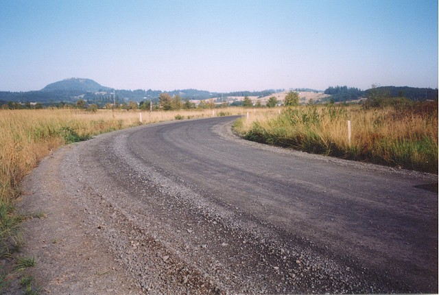
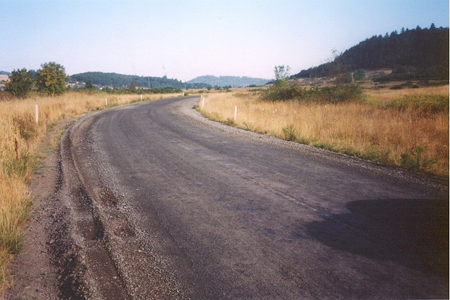
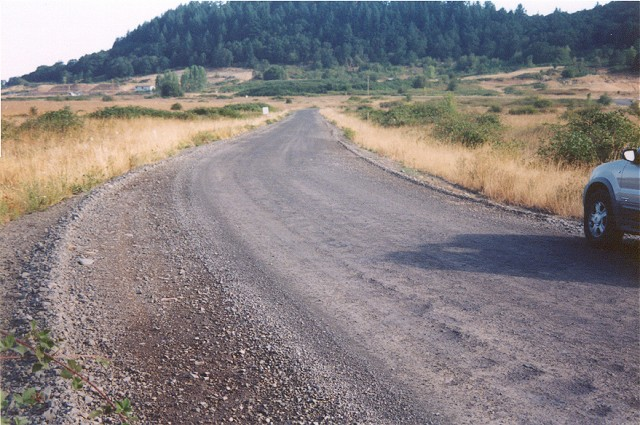
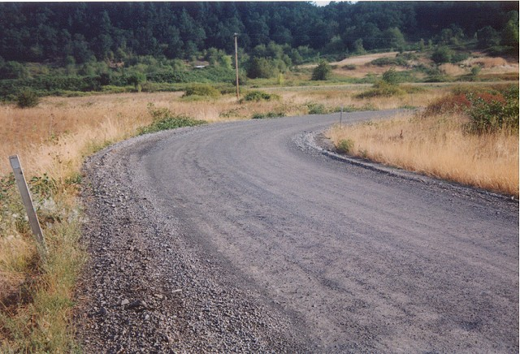
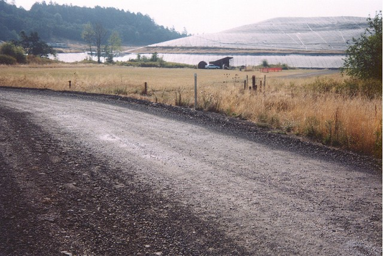
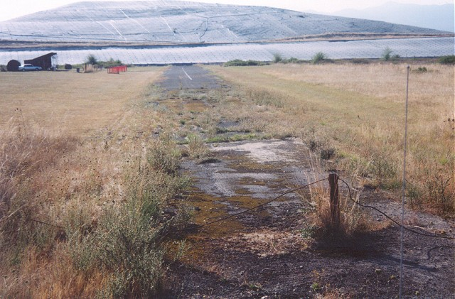
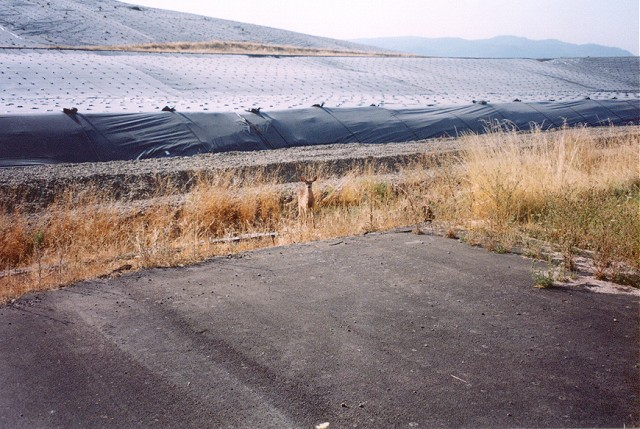
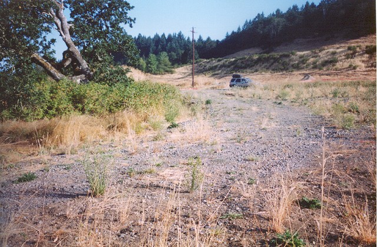

Numbers on the map represent the location where the photographs were taken. Scroll down to view the photographs.
Oregon International Raceway - Turns 1, 2 & Infield Loop
|| Contents || Front Stretch | Turns 1, 2 & Infield Loop | Backstretch and Final Corners || Home ||
Numbers on the map represent the location where the photographs were taken. Scroll
down to view the photographs.
Return to racingcircuits.net's Photo Archive Main Index

08 - Entering turn 1.

09 - Middle of turn 1.

10 - Exiting turn 1. Must have been an awesome corner.

11 - Entering second turn.

12 - The existing dirt road turns back to the left to join the main paved
road of the facility. The actual turn of the race course continued to the right and joined
the strip of pavement to the right of the little hut in the center of the photo.

13 - Shows what I believe is the last remnants of of actual racing surface
although it has probably been repaved further down by the white centerline where an R/C
airplane club uses it for a runway. The mound of trash at the end is not shown in the 2000 aerial photo.

14 - A little wildlife. From here the track would have been approaching
the entrance to a long left hander or a series of left handers.

15 - Exit of the left hander where it meets the main road of the facility
which I figure is paved right over the old course as you'll see in photo 19.
| << PREVIOUS PAGE |
Photographs and Text ©Brian Parker. Reproduced here with kind permission.